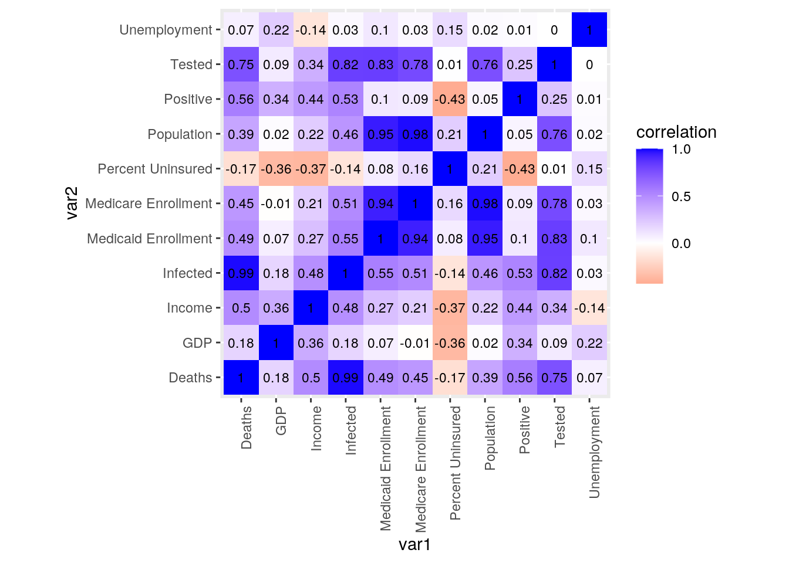
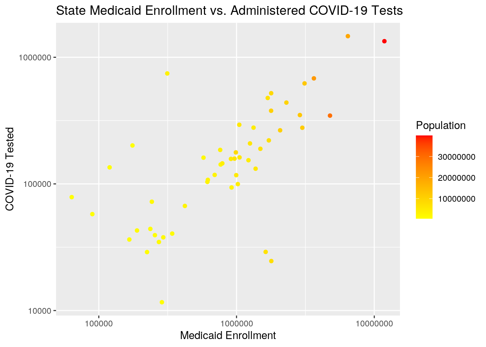
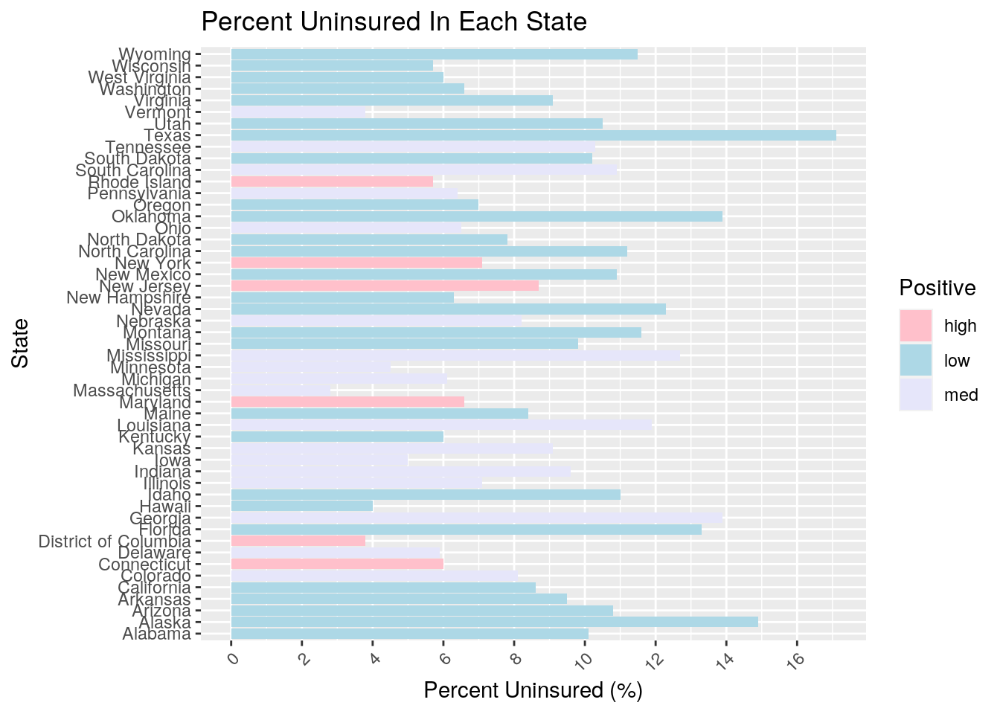
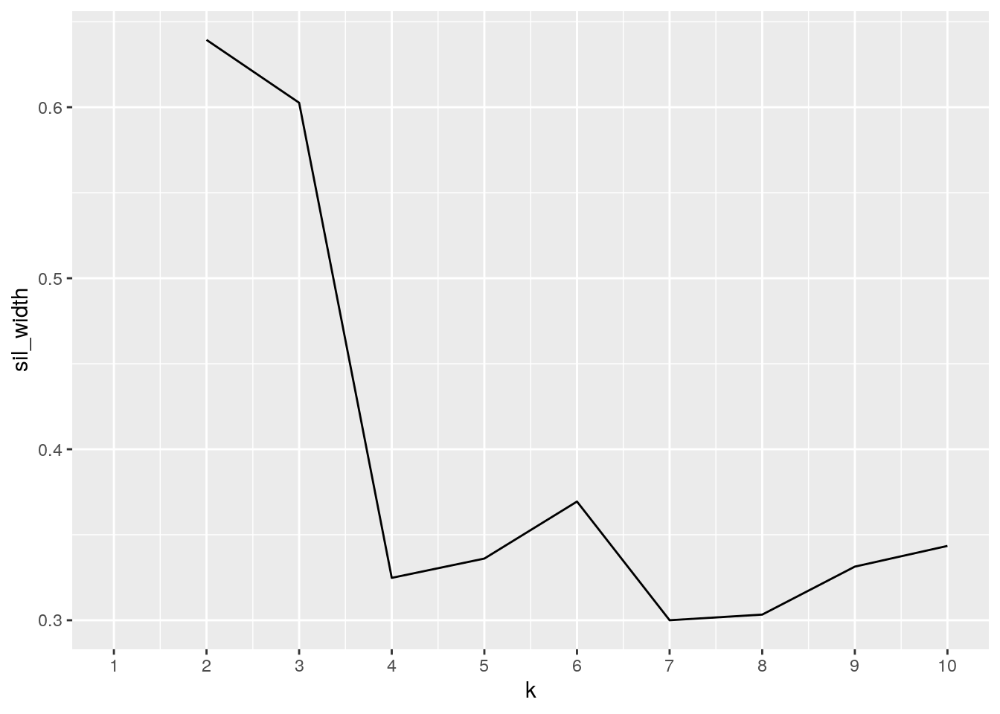
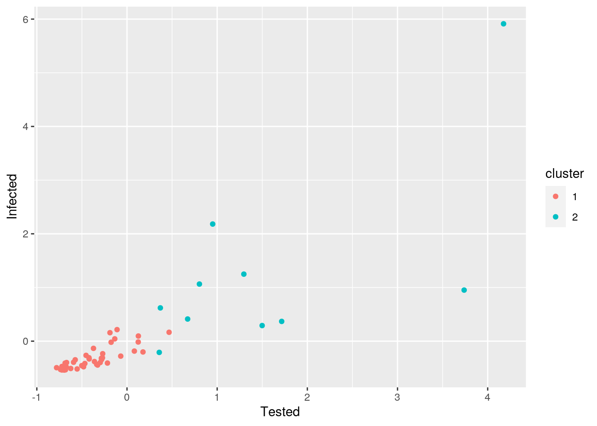
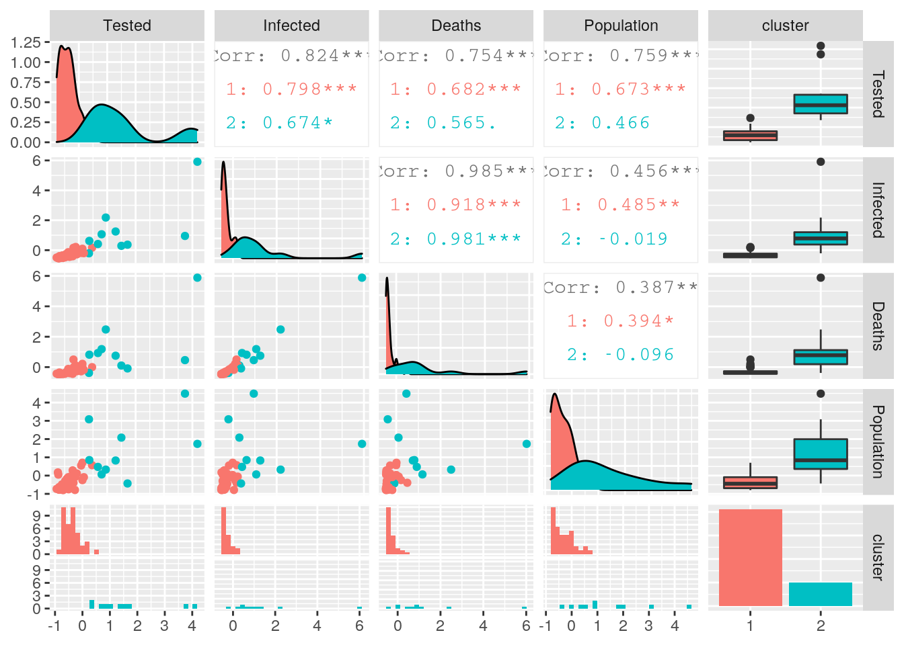
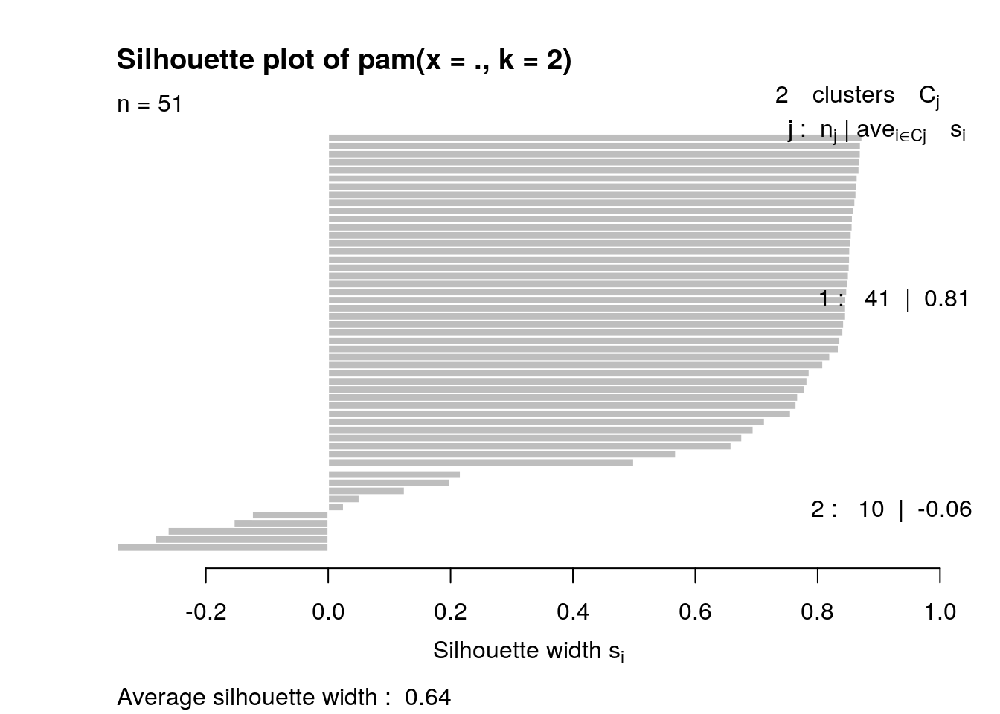

Adrianna Lam asl2429
Two datasets were chosen for my exploratory data analysis project. The first dataset covid, was found on kaggle.com, and contains 8 variables total, 1 categorical and 7 numeric. The covid data has 51 observations, one for each of the 50 states plus the District of Columbia. For each state, data is given for the number of COVID-19 tests administered, the amount of people infected by COVID, the amount of deaths as a result of COVID, the state population, the average income of the residents, the GDP, and percentage of unemployment. The second dataset chosen is insurance, and was also found on the kaggle site. The insurance dataset also includes 1 categorical variable of states, and then 3 other numeric variables. For each state (including District of Columbia and the entire U.S.), the percentage of the population that is medically uninsured is given, as well as the amount of residents enrolled in Medicaid and Medicare.
The datasets covid and insurance were chosen because I am interested in researching the accessibility of healthcare, especially during the COVID-19 pandemic, and further understanding how the lack of economic resources and medical insurance can affect the health of vulnerable populations. As a pre-med student, I believe it's important to always factor in the social determinants of health, and to consider them when understanding healthcare statistics and trends. I also find it interesting to explore the variability between each state, and how the pandemic affected them all differently. I anticipate some associations between perecent uninsured in each state, and the average state resident income, GDP, and unemployment percent. Another expectation is that the state's with higher uninsurance rates will have less tests administered and therefore fewer amount of infected individuals and deaths. I also anticipate that states with a greater population will admininster more tests, and have higher numbers of infected indivdiuals and deaths, just as a result of having a greater amount of residents.
library(tidyverse)
library(cluster)
library(ggplot2)
covid <- read_csv("covid.csv")
insurance <- read_csv("insurance.csv")
head(covid)## # A tibble: 6 x 8
## State Tested Infected Deaths Population Income GDP Unemployment
## <chr> <dbl> <dbl> <dbl> <dbl> <dbl> <dbl> <dbl>
## 1 Alaska 36380 399 10 734002 59687 73205 5.8
## 2 Alabama 157566 12376 504 4908621 42334 45219 2.7
## 3 Arkansas 93701 4923 102 3038999 42566 42454 3.5
## 4 Arizona 220612 14566 704 7378494 43650 48055 4.5
## 5 California 1339316 81795 3334 39937489 62586 74205 3.9
## 6 Colorado 131837 22482 1257 5845526 56846 63882 2.5head(insurance)## # A tibble: 6 x 4
## State `Percent Uninsured` `Medicaid Enrollment` `Medicare Enrollment`
## <chr> <chr> <dbl> <dbl>
## 1 Alabama 10.10% 910775 989855
## 2 Alaska 14.90% 166625 88966
## 3 Arizona 10.80% 1716198 1175624
## 4 Arkansas 9.50% 920194 606146
## 5 California 8.60% 11843081 5829777
## 6 Colorado 8.10% 1375264 820234Datasets are already tidy, so tidying functions are used in #3 to make the summary tables.
fulldata <- full_join(covid, insurance, by = c("State")) #full join by State
fulldata <- fulldata %>% slice(-c(52)) #removing extra United States observationA full join was done on the covid and insurance datasets to create fulldata, based on the categorical variable State. There were 51 observations in the State variable of the 'covid' dataset, for each of the 50 states plus District of Columbia. There were 52 observations in the 'insurance' dataset, the extra row being for the United States. A full join was used because after joining by the State variable, all the original data from the 2 datasets are retained into the fulldata. As a result, the new joined dataset has 11 variables, 1 categorical being State, and then the other 10 variables are the numeric variables that correspond to each state. After the join, the United States case was dropped because there was no data for it in the covid data, leaving 51 observations in the State variable.
fulldata <- fulldata %>% mutate(`Percent Uninsured` = str_replace(`Percent Uninsured`,
"%", "")) #removing % sign from Percent Uninsured column using mutate
fulldata <- fulldata %>% mutate_all(type.convert) %>%
mutate_if(is.factor, as.character) %>% mutate(`Percent Uninsured`) #converting Percent Uninsured to numeric variable using mutate
fulldata <- fulldata %>% mutate(Positive = (Infected/Tested)) #creating new numeric variable for rate of positive tests using mutate
fulldata %>% rename_all(function(x) str_replace(x,
"_", "")) %>% summarize_if(is.numeric, .funs = list(mean = mean,
median = median, sd = sd, var = var, min = min,
max = max), na.rm = T) %>% pivot_longer(contains("_")) %>%
separate(name, sep = "_", into = c("variable",
"Stat")) %>% pivot_wider(names_from = "variable",
values_from = "value") %>% arrange(Stat) #overall summary statistics of all numeric variables using summarize, arrange, pivot_longer, and pivot_wider## # A tibble: 6 x 12
## Stat Tested Infected Deaths Population Income GDP Unemployment
## <chr> <dbl> <dbl> <dbl> <dbl> <dbl> <dbl> <dbl>
## 1 max 1.47e 6 3.53e5 2.28e4 3.99e 7 7.46e4 2.00e5 5.8
## 2 mean 2.41e 5 2.98e4 1.68e3 6.50e 6 5.16e4 6.15e4 3.52
## 3 medi… 1.54e 5 1.24e4 4.67e2 4.50e 6 4.94e4 5.75e4 3.4
## 4 min 1.16e 4 3.99e2 1.00e1 5.67e 5 3.80e4 3.79e4 2.2
## 5 sd 2.94e 5 5.46e4 3.60e3 7.45e 6 8.22e3 2.26e4 0.831
## 6 var 8.63e10 2.99e9 1.29e7 5.55e13 6.76e7 5.13e8 0.691
## # … with 4 more variables: `Percent Uninsured` <dbl>, `Medicaid
## # Enrollment` <dbl>, `Medicare Enrollment` <dbl>, Positive <dbl>fulldata <- fulldata %>% filter(Positive > 0) %>% mutate(Positive_cat = case_when(Positive <
0.093 ~ "low", 0.093 <= Positive & Positive <=
0.186 ~ "med", Positive > 0.186 ~ "high")) #creating new categorical variable for categorizing positive rates using filter and mutate
fulldata %>% group_by(Positive_cat) %>% select(is.numeric) %>%
summarize_all(list(mean = mean, median = median,
sd = sd, var = var, min = min, max = max),
na.rm = T) %>% pivot_longer(c(-1), values_to = "values",
names_to = "stat") %>% separate(stat, sep = "_",
into = c("variable", "stat")) %>% pivot_wider(names_from = "variable",
values_from = "values") %>% arrange(match(Positive_cat,
c("high", "med", "low"))) #summary statistics when grouped by categories of positive rates using groupby, select, arrange, pivot_longer and pivot_wider## # A tibble: 18 x 13
## Positive_cat stat Tested Infected Deaths Population Income GDP
## <chr> <chr> <dbl> <dbl> <dbl> <dbl> <dbl> <dbl>
## 1 high mean 4.06e 5 9.87e 4 6.58e3 6.63e 6 6.26e4 9.30e4
## 2 high medi… 1.97e 5 4.00e 4 2.78e3 4.82e 6 6.53e4 7.29e4
## 3 high sd 5.51e 5 1.35e 5 8.84e3 7.00e 6 1.00e4 5.33e4
## 4 high var 3.04e11 1.83e10 7.81e7 4.90e13 1.01e8 2.85e9
## 5 high min 1.16e 4 2.80e 3 1.24e2 7.21e 5 4.73e4 5.79e4
## 6 high max 1.47e 6 3.53e 5 2.28e4 1.94e 7 7.46e4 2.00e5
## 7 med mean 2.26e 5 3.20e 4 1.81e3 6.26e 6 5.07e4 5.91e4
## 8 med medi… 1.76e 5 2.56e 4 1.15e3 5.77e 6 4.95e4 5.69e4
## 9 med sd 1.68e 5 2.73e 4 1.89e3 3.94e 6 7.03e3 1.04e4
## 10 med var 2.83e10 7.48e 8 3.56e6 1.55e13 4.95e7 1.07e8
## 11 med min 2.90e 4 4.03e 3 4.40e1 6.28e 5 3.80e4 3.79e4
## 12 med max 6.22e 5 9.80e 4 5.94e3 1.28e 7 7.01e4 8.25e4
## 13 low mean 2.15e 5 1.30e 4 5.06e2 6.62e 6 4.97e4 5.61e4
## 14 low medi… 1.42e 5 7.05e 3 2.94e2 3.28e 6 4.82e4 5.53e4
## 15 low sd 2.86e 5 1.84e 4 7.33e2 9.33e 6 6.80e3 1.03e4
## 16 low var 8.19e10 3.40e 8 5.37e5 8.71e13 4.63e7 1.05e8
## 17 low min 2.46e 4 3.99e 2 1.00e1 5.67e 5 4.06e4 4.25e4
## 18 low max 1.34e 6 8.18e 4 3.33e3 3.99e 7 6.26e4 7.42e4
## # … with 5 more variables: Unemployment <dbl>, `Percent Uninsured` <dbl>,
## # `Medicaid Enrollment` <dbl>, `Medicare Enrollment` <dbl>, Positive <dbl>fulldata_nums <- fulldata %>% column_to_rownames("State") %>%
select_if(is.numeric)
cordat <- cor(fulldata_nums, use = "complete.obs")
cordat #correlation matrix on numeric variables using select## Tested Infected Deaths Population Income
## Tested 1.0000000000 0.82417763 0.75360437 0.75942313 0.3445136
## Infected 0.8241776341 1.00000000 0.98520623 0.45614908 0.4833769
## Deaths 0.7536043681 0.98520623 1.00000000 0.38699717 0.5020594
## Population 0.7594231296 0.45614908 0.38699717 1.00000000 0.2163976
## Income 0.3445136190 0.48337695 0.50205940 0.21639765 1.0000000
## GDP 0.0886600743 0.17699442 0.18336841 0.01814731 0.3623168
## Unemployment 0.0006089495 0.02886567 0.06829017 0.02180190 -0.1387394
## Percent Uninsured 0.0053871970 -0.14254277 -0.16923401 0.21193172 -0.3722147
## Medicaid Enrollment 0.8282427652 0.55381628 0.48718486 0.94789078 0.2717915
## GDP Unemployment Percent Uninsured
## Tested 0.088660074 0.0006089495 0.005387197
## Infected 0.176994423 0.0288656703 -0.142542773
## Deaths 0.183368408 0.0682901666 -0.169234008
## Population 0.018147308 0.0218018981 0.211931718
## Income 0.362316801 -0.1387393501 -0.372214717
## GDP 1.000000000 0.2179731251 -0.361707640
## Unemployment 0.217973125 1.0000000000 0.152308727
## Percent Uninsured -0.361707640 0.1523087266 1.000000000
## Medicaid Enrollment 0.069945539 0.0995191917 0.078421029
## Medicaid Enrollment Medicare Enrollment Positive
## Tested 0.82824277 0.781081786 0.25114709
## Infected 0.55381628 0.506311008 0.53146708
## Deaths 0.48718486 0.447447044 0.55605296
## Population 0.94789078 0.982798688 0.04808287
## Income 0.27179147 0.212869247 0.43591880
## GDP 0.06994554 -0.006431596 0.34089267
## Unemployment 0.09951919 0.032170419 0.01477861
## Percent Uninsured 0.07842103 0.162865810 -0.43020100
## Medicaid Enrollment 1.00000000 0.938190740 0.09990471
## [ reached getOption("max.print") -- omitted 2 rows ]To create a summary table for the overall summary statistics of every numeric variable, I had to first ensure that all my intended numeric variables were categorized as numeric. I ran into an issue with my Percent Uninsured variable, becase the data in the column contained an extra "%", causing the variable to be counted as a character. To solve this I used the mutate() and str_replace() function to remove the "%" and then converted the variable into a numeric variable. Using mutate(), an additional numeric variable was then created and named Postive, which shows the rate of tests coming back with a positive result. The function summarize() was then used to create a table of the summary statistics: mean, median, sd, variance, min, and max, for each numeric variable overall. To tidy the table, pivot_longer() was used to order the column names and their variables into two columns, and then separate() was used to create separate columns for the variable names and summary statistics. Pivot_wider() and arrange() were then used to shift the rows into columns, and alphabetize the statistic column.
Using filter() and mutate(), a new categorical variable was made called Positive_cat, which categorizes the positive rates into high, med, and low. A table for the same six summary statistics grouped by the Positive_cat variable is then created using group_by(), select(), and summarize(). Tidying is then done to reshape the table, pivot_longer(), separate(), pivot_wider(), and arragne() are used much like in the previous overall table to organize the data. This table shows the mean, median, sd, variance, min and max statistics of each numeric variable for the high, med, and low groups. A correlation matrix is then created for all of the numeric variables in the data. There are high correlations between deaths and infected, tested and infected, tested and medicaid enrollment, medicaid enrollment and population, medicaid enrollment and medicare enorollment, and medicare enorllment and population.
tidycor <- cordat %>% as.data.frame %>% rownames_to_column("var1") %>%
pivot_longer(-1, names_to = "var2", values_to = "correlation")
tidycor## # A tibble: 121 x 3
## var1 var2 correlation
## <chr> <chr> <dbl>
## 1 Tested Tested 1
## 2 Tested Infected 0.824
## 3 Tested Deaths 0.754
## 4 Tested Population 0.759
## 5 Tested Income 0.345
## 6 Tested GDP 0.0887
## 7 Tested Unemployment 0.000609
## 8 Tested Percent Uninsured 0.00539
## 9 Tested Medicaid Enrollment 0.828
## 10 Tested Medicare Enrollment 0.781
## # … with 111 more rowstidycor %>% ggplot(aes(var1, var2, fill = correlation)) +
geom_tile() + scale_fill_gradient2(low = "red",
mid = "white", high = "blue") + geom_text(aes(label = round(correlation,
2)), color = "black", size = 3) + theme(axis.text.x = element_text(angle = 90,
hjust = 1)) + coord_fixed() #correlation heatmap A correlation heatmap for all of the numeric variables was made. Blue colored correlations are more highly correlated, while the red colored correlations are negatively correlated. The heatmap shows strong relationships between the number of tested individuals in a state and the number of deaths, infected, medicaid enrollement, medicare enrollement, and population. This correlation is most likeley seen as a result of state population, the states with more people will usually have higher numbers in these stats. There is also a very high association between the number of infected individuals and the number of deaths in a state. The percent of uninsured people in a state is also significantly negatively associated with the rate of positive tests, income, and GDP of a state. States with a higher percentage of uninsured people will have lower rates of positive tests, and a lower state income and GDP.
options(scipen = 999)
fulldata %>% ggplot(aes(`Medicaid Enrollment`, Tested,
color = Population)) + geom_point() + scale_y_log10() +
scale_x_log10() + scale_color_gradient(low = "yellow",
high = "red") + ggtitle("State Medicaid Enrollment vs. Administered COVID-19 Tests") +
xlab("Medicaid Enrollment") + ylab("COVID-19 Tested") #scatterplot A scatterplot is made that plots medicaid enrollment vs. the amount of tests administered in a state. The points are then colored by its state population. The ggplot shows a strong correlation between medicaid enrollment, the amount of COVID tests administered, and state population. The greater the amount of people in a state, the higher the amount of medicaid enrollment, and the greater amount of COVID tests administered. Red shows the states with higher population, and yellow shows the states with less population. Both the x and y axis were scaled by log 10.
fulldata %>% ggplot(aes(x = State, fill = Positive_cat)) +
geom_bar(aes(y = `Percent Uninsured`, position = "fill"),
stat = "summary", fun = mean) + theme(axis.text.x = element_text(angle = 45,
hjust = 1)) + scale_fill_manual("Positive", values = c(high = "pink",
med = "lavender", low = "light blue")) + scale_y_continuous(n.breaks = 10) +
ggtitle("Percent Uninsured In Each State") + xlab("State") +
ylab("Percent Uninsured (%)") + coord_flip() #barplot A barplot was made that showed the percent of uninsured people in each state. Each bar was colored by Positive_cat. Pink bars have a high positive rate, purple bars have a medium positive rate, and blue bars have a low positive rate. An association can be seen, as it looks like the states with lower positive rates have generally a higher percent of uninsured people. The states with medium positive rates have generally a more high/medium percent uninsured. The states in the low positive rate category have generally a lower rate of uninsured. There is a negative correlation between the percent uninsured and the positive rate category of each state.
clust_dat <- fulldata %>% select(Tested, Infected,
Deaths, Population) %>% scale %>% as.data.frame #process data (scale numeric variables) #only use numerics(euclidean)For the clustering, only the numeric variables of Tested, Infected, Deaths and Population were used, which were then processed by scaling. It was named to a vector called clust_dat.
sil_width <- vector() #choose number of clusters k (silhouette method)
for (i in 2:10) {
pam_fit <- pam(clust_dat, k = i)
sil_width[i] <- pam_fit$silinfo$avg.width
}
ggplot() + geom_line(aes(x = 1:10, y = sil_width)) +
scale_x_continuous(name = "k", breaks = 1:10) #disucss goodness-of-fit Using the PAM clustering silhouette method, it can be determined that there should be 2 numbers of clusters. The goodness of fit plot shows that the greatest width is between 2 groups, so 2 clusters will be used in PAM analysis.
pam1 <- clust_dat %>% pam(2) #cluster analysis (PAM)
pam1## Medoids:
## ID Tested Infected Deaths Population
## [1,] 34 -0.467554 -0.4163953 -0.3641203 -0.4505365
## [2,] 15 1.295755 1.2488714 0.7498320 0.8272064
## Clustering vector:
## [1] 1 1 1 1 2 1 1 1 1 2 1 1 1 1 2 1 1 1 1 2 1 1 2 1 1 1 1 1 1 1 1 2 1 1 2 1 1 1
## [39] 2 1 1 1 1 2 2 1 1 1 1 1 1
## Objective function:
## build swap
## 0.9005933 0.8696492
##
## Available components:
## [1] "medoids" "id.med" "clustering" "objective" "isolation"
## [6] "clusinfo" "silinfo" "diss" "call" "data"A PAM cluster analysis is performed by clustering into 2 clusters, and the results are shown. It is named to pam1.
clust_dat <- clust_dat %>% mutate(cluster = as.factor(pam1$clustering))
ggplot(clust_dat, aes(x = Tested, y = Infected, color = cluster)) +
geom_point() #visualize clusters The cluster assignment is saved as a column in the dataset. A scatterplot of the data is then made, showing Tested vs. Infected, and colored by final cluster assignment. Two clusters can be seen. The first cluster is more numerous and concise, and the second cluster is more sparse and has less observations.
library(plotly)
clust_dat %>% plot_ly(x = ~Tested, y = ~Infected, z = ~Deaths,
color = ~cluster, type = "scatter3d", mode = "markers")library(GGally)
ggpairs(clust_dat, aes(color = cluster)) A graphic is then created to visualize all the pairwise combinations of all the 4 variables in the 2 cluster groups. The 2 distinct clusters can be seen.
pam1$silinfo$avg.width## [1] 0.639383plot(pam1, which = 2) #interpret silhouette width, goodness of fit A silhouette plot of the PAM clustering is made, with the average silhouette width being 0.64. This value indicates that a reasonable structure has been found, meaning that choosing 2 groups to perform clustering with was a good idea.
clust_dat %>% mutate(cluster = pam1$clustering) %>%
group_by(cluster) %>% rename_all(function(x) str_replace(x,
"_", "")) %>% summarize_if(is.numeric, .funs = list(mean = mean,
median = median, sd = sd), na.rm = T) %>% pivot_longer(contains("_")) %>%
separate(name, sep = "_", into = c("variable",
"stat")) %>% pivot_wider(names_from = "variable",
values_from = "value") %>% arrange(stat) #interpret clusters## # A tibble: 6 x 6
## cluster stat Tested Infected Deaths Population
## <int> <chr> <dbl> <dbl> <dbl> <dbl>
## 1 1 mean -0.380 -0.313 -0.296 -0.329
## 2 2 mean 1.56 1.28 1.21 1.35
## 3 1 median -0.420 -0.393 -0.364 -0.445
## 4 2 median 1.12 0.786 0.784 0.838
## 5 1 sd 0.297 0.215 0.212 0.407
## 6 2 sd 1.35 1.75 1.82 1.52The summary statistics of mean, median, and sd for each of the four variables were then found for cluster 1 and 2.
PAM clustering was performed on the numeric variables- Tested, Infected, Deaths, and Population. From the PAM clustering silhouette it can be found that 2 clusters should be used for the PAM analysis, because there is the greatest width at k = 2. The PAM clustering analysis performed shows how far the clusters are from each other, and it is then visualized in multiple plots. From the plots, it can be seen that there are 2 distinct clusters, but the first cluster is more concise and plentiful, while the second is sparse and spread out. The average silhouette width was found to 0.64, meaning that choosing 2 clusters was appropriate because there are reasonable structures found. Finally, a table for the summary statistics of each cluster is created. The means and medians of each variable for cluster 1 are negative, while they are positive for cluster 2. The standard deviation for cluster 1 is also a lot smaller than that of cluster 2. These stats are consistent with the plots created and silhouette method performed to visualize the 2 clusters.